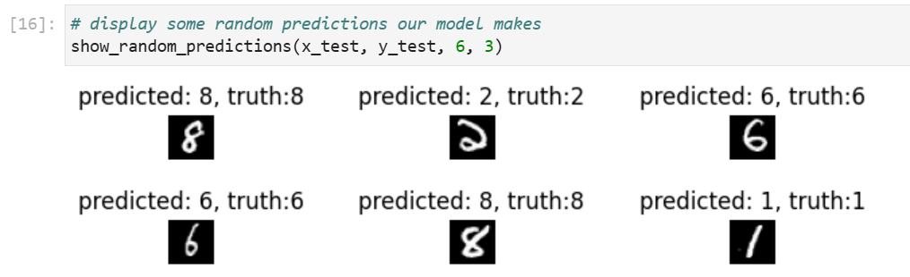
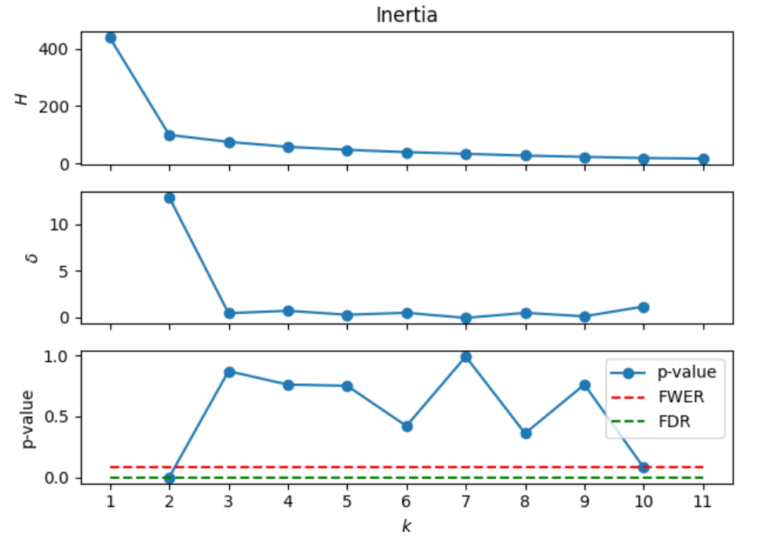
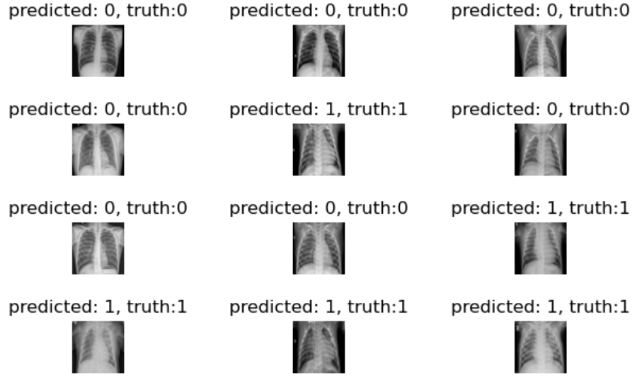
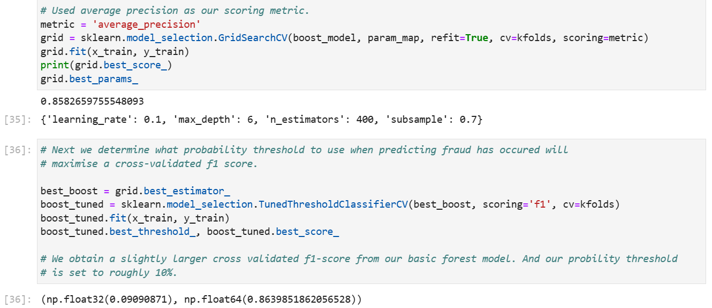
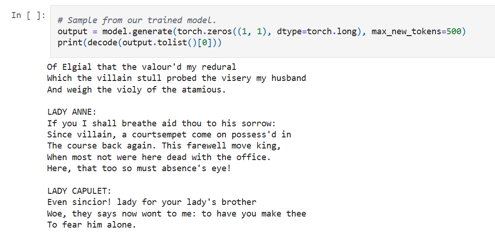

Using only Python and NumPy, I built a framework for building MLP neural networks with tensors, automatic gradient descent and batch normalization. And using my code, I achieved a 95% test accuracy on the MNIST handwritten digits dataset.

Following a research paper by Francisco J. Pérez-Reche, I coded models for unsupervised learning that attempt to find statistically significant 'elbows' in cluster heterogeneity when looking at different possible cluster sizes.

Using a CNN and a dataset from Kaggle containing chest X-ray images of patients with and without pneumonia, I trained a model that predicts whether patients have pneumonia with roughly 89% test accuracy.
Also, it correctly predicted 97% of the test set's pneumonia images.

Using a XGBoost and cross-validation, I created a boosted tree ensemble that predicts whether credit card fraud has occured with a test F1-score of 0.88 despite fraud cases making up less than 0.2% of the dataset.

Using a long short-term memory recurrent neural network, I created a character level neural network that can generate text similar to Shakespeare's writings. It can generate real words and use punctuation. It is definitely not perfect due to its size and being character based, but I think it's kinda cool.